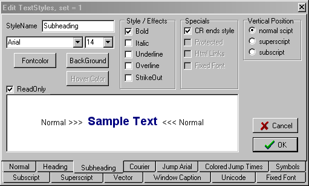
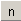
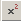
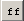

December 2004
Styles
Introduction
The idea here is that the document only contains content and that the formatting of the document is in some separate document. This ensures that a number of different documents all will have the same style and keeps the documents small. This can be best compared to html pages with all having the same Cascade stylesheet. Another advantage is that changing the format, will change all documents.
To keep it as simply as possible, JALcc only contains a very limited set of styles. The styles are grouped in a number of stylesets. Each styleset consists of 13 free programmable textstyles. The paragraph styles and list styles are fixed and equal for all stylesets.
StyleSets
The styleset can be selected by the next button.

The styleset definies text-styles, paragraph-styles, list-styles, background-color, etc for this document. For HTML pages the styleset for all the html-files in the current path are set to the selected style.
Paragraph Styles
Just the simple paragrph styles are available and be selected by the appropriate buttons
There's also a one-level indent funtion, which can be selected by the next buttons:
(These buttons are also used to increase / decrease the liststyle level)
For tables you can also determine th vertical allignment, with the follwoing buttons
List Styles
There are 2 liststyles available, bullit and numbered. Both liststyles are equal and fixed for all stylesets. Each list has a maximum of 2 levels, which can be selected by the indent / unindent buttons.
TextStyle Settings
Each styleset consist of 13 textstyles. Each textstyle can be configured by the user, although some styleaspects are fixed for some or all styles.
The only style that can contain a hyperlink is style = 5 (here called "Jump Arial"). So style =5 is also the only style that will have a hover color setting. Style = 13 , is supposed to have fixed font (although you could assign a non fixed font to it), and is used by JALcc for special cases, like batch or code files. The "protected" feature, is meant for questionaries and is not made public for this moment.
The "Sample Text" in the example below is displayed in the selected style and the background of the editor is copied from the real editor. This example text, which is surrounded by some text in the first style ("Normal"), can be edited, to see special characters. For this moment the vertical position, in superscript and subscribt, is fixed, at 50% of the selected fontheight.

TextStyles
|
 |
1 = normal font This font (or the fixed-font) is also used in plain text files. |
|
|
2 = Header font |
|
|
3 = Sub Header font |
|
|
4 = Some accent font |
|
|
5 = Link / Jump Font This is the only font, that can have jump/link tags. It's always undelined and has a (user-definable) hoover color. |
|
|
6 = Some accent font |
|
|
7 = Symbolic font |
|
|
8 = SubScript font This font is used/displayed as subscript, so it's advised to derive this font from the normal font. |
|
 |
9 = SuperScript font This font is used/displayed as superscript, so it's advised to derive this font from the normal font. |
|
|
10 = Vector font This font is used/displayed as vector font (has a line above the font). It's advised to derive this font from the normal font or any other font used for formulas.
|
|
|
11 = Windows Caption font (some accent font) |
|
|
12 = UniCode font, just a nema, because unicode is not supported at this moment |
|
 |
13 = Fixed font This font (or the normal-font) is also used in plain text files. |